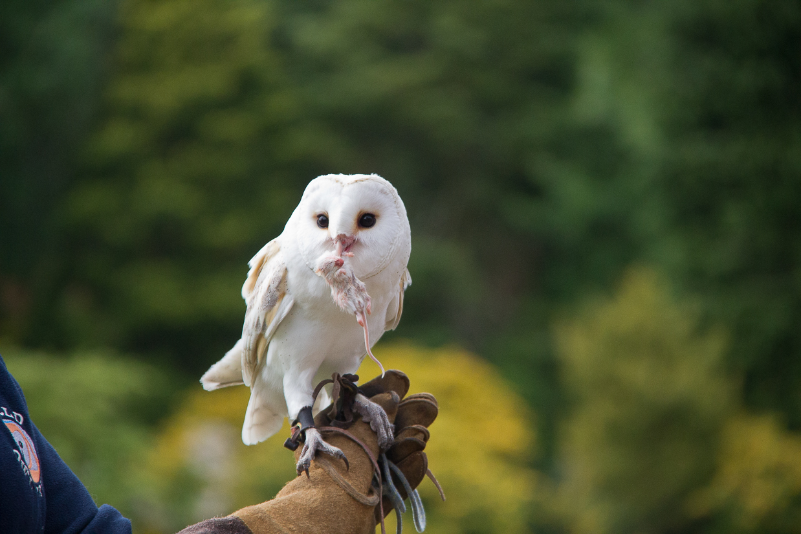

Resources → Categories
Falconry Events & Demonstrations
From intimate educational programs at nature centers to dramatic falcon flights at corporate galas, falconry demonstrations captivate audiences like few other live experiences. Hiring a professional falconer for your event creates unforgettable moments while educating guests about one of humanity’s oldest hunting traditions. Here is everything you need to know about booking, pricing, and what to expect.
Types of Falconry Events
Professional falconers offer a wide range of event formats, each tailored to different audiences and settings:
Educational demonstrations. The most common format, typically lasting 30–90 minutes. A falconer presents one or more birds of prey, explains their natural history and hunting adaptations, and flies them for the audience. These programs are popular at schools, scout troops, libraries, nature centers, and community festivals. Many providers bring multiple species—a hawk, a falcon, and perhaps an owl—to showcase the diversity of raptors.
Corporate events and team building. Companies book falconry experiences for executive retreats, team-building days, and client entertainment. These events typically include a presentation, hands-on interaction where attendees fly a bird to the glove, and a guided hawk walk through suitable terrain. The combination of education, outdoor activity, and the sheer novelty of holding a hawk makes falconry a standout corporate experience.
Weddings and private celebrations. Falconry has become a sought-after wedding feature, particularly for outdoor ceremonies. A trained owl or hawk delivers the rings to the best man, or a falcon is released during the ceremony as a dramatic symbolic gesture. Some couples book a full falconry experience for their wedding party as a rehearsal dinner activity.
Festivals and fairs. Renaissance faires, county fairs, harvest festivals, and outdoor sporting events frequently feature falconry demonstrations as anchor entertainment. These multi-day engagements often involve multiple shows per day and require robust birds accustomed to crowds and noise.
Film, television, and photography. Trained raptors are used in film and television productions, commercial photography, and advertising campaigns. This specialized work requires birds that are comfortable with lighting equipment, multiple handlers, and extended periods on set. Providers in this niche carry additional insurance and have experience coordinating with production crews.
Hawk walks and falconry experiences. An increasingly popular tourism offering, hawk walks allow participants to walk through woods or fields with a free-flying hawk that follows overhead, landing on their glove periodically. These experiences typically last one to three hours and accommodate small groups of two to eight people.
What to Expect at a Demonstration
A well-run falconry demonstration is equal parts education and spectacle. Here is what a typical program looks like:
The falconer arrives well before the event to assess the venue, identify potential hazards (overhead wires, open doors, aggressive dogs), and set up any necessary equipment. Birds are transported in secure, ventilated boxes and remain hooded or in their boxes until showtime to minimize stress.
The presentation begins with an introduction to falconry’s history—a practice dating back over 4,000 years to the steppes of Central Asia. The falconer then introduces each bird individually, explaining its species, hunting style, and unique adaptations. Audiences learn why a peregrine falcon can dive at over 200 miles per hour, how a Harris’s hawk hunts cooperatively in family groups, and why an owl’s feathers enable virtually silent flight.
The highlight is the flight demonstration. Birds are flown to the fist (glove), to a lure, or in free flight over the audience. Many presenters invite volunteers to wear the glove and have a hawk land on their arm—an experience that leaves a lasting impression, especially on children.
After the formal presentation, most providers allow a meet-and-greet period where guests can view the birds up close, ask questions, and take photographs. Some falconers bring feathers, castings (pellets), and other educational props for interactive learning.
How to Hire a Falconer for Your Event
Booking a falconry demonstration requires more planning than hiring a typical entertainer. Here is how to ensure a successful experience:
- Book early. Professional event falconers are in high demand, especially during spring through fall when outdoor events peak. Book at least 4–8 weeks in advance for standard events and 3–6 months ahead for weddings and large festivals.
- Describe your venue in detail. The falconer needs to know whether the event is indoors or outdoors, the size of the space, ceiling height (for indoor events), proximity to roads and power lines, expected audience size, and whether other animals will be present.
- Clarify the format. Discuss whether you want a static display (birds on perches for viewing), a flight demonstration, hands-on interaction, a hawk walk, or a combination. Each format has different space, time, and pricing implications.
- Ask about permits. Professional event falconers should hold all required state and federal permits for public exhibition of raptors. Some states require a Special Purpose—Abatement or Education permit in addition to the standard falconry license. Ask to see documentation.
- Request proof of insurance. Any reputable provider carries general liability insurance covering their activities at your venue. Typical coverage is $1–5 million. Your venue may require the falconer to name them as an additional insured on their policy.
- Discuss contingency plans. Birds of prey are living animals, not props. Weather, illness, or behavioral issues may require last-minute adjustments. A professional falconer will have backup birds and a rain plan discussed in advance.
Pricing & What Affects Cost
Falconry event pricing depends on several factors. Here are typical ranges:
- Educational demonstration (1 hour, single falconer): $500–$1,000. Standard format for schools, scout groups, and community events.
- Corporate event or team building (2–4 hours): $1,000–$2,500. Includes presentation, hands-on interaction, and often a hawk walk component. Price increases with group size and number of birds.
- Wedding or private celebration: $800–$3,000. Ring delivery by owl or hawk typically starts around $800. A full ceremony flight with photography time and guest interaction runs $1,500–$3,000.
- Festival or multi-day engagement: $1,500–$5,000+ per day. Multi-show days at large venues with multiple falconers and birds command premium pricing.
- Hawk walk experience (1–3 hours, small group): $150–$400 per person. Some providers offer group rates for parties of four or more.
Factors that affect pricing include travel distance (mileage or lodging costs for out-of-area events), number of birds and handlers required, duration, indoor vs. outdoor (indoor flying requires specialized birds and carries higher risk), and the time of year (peak season is April through October).
Most providers require a deposit (typically 25–50%) to secure the date, with the balance due on or before the event day.
Safety Requirements & Considerations
Raptors are wild animals with sharp talons and beaks, and safety must be the top priority at any falconry event:
- Crowd management. The falconer will establish a safe perimeter around the flight area. Audiences should remain seated or behind a designated boundary during flights. The falconer controls the pace and decides when it is safe for audience interaction.
- No flash photography during flights. Camera flashes can startle a bird mid-flight, causing it to veer into the audience or flee the area. Most falconers allow photography with flashes disabled and will announce this rule before the demonstration.
- Pet restrictions. Dogs, cats, and other animals must be kept well away from the demonstration area. Even a leashed dog can trigger a raptor’s predator or prey response, creating a dangerous situation for everyone.
- Weather limitations. Raptors should not be flown in heavy rain, high winds (typically above 25 mph), or extreme heat. The falconer will make the final call on whether conditions are safe for flying. This is a non-negotiable safety decision.
- Indoor considerations. Indoor flights require a fully enclosed space with no open windows, skylights, or gaps where a bird could escape. Ceiling fans must be turned off. Lighting should be adequate but not excessively bright or strobing.
- Participant safety. When audience members wear the glove to receive a hawk, the falconer provides instructions and supervises every moment. Leather gloves are always provided—no one handles a raptor with bare hands. Children are typically accompanied by an adult and the falconer during hands-on interactions.
A professional falconer manages all of these considerations as a matter of routine. If a provider seems casual about safety or dismissive of your concerns, consider that a red flag and look elsewhere.
Browse Falconry Events & Demos
Find verified falconry demonstration providers in our directory.
Browse Event ListingsList Your Falconry Event Business
Reach event planners searching for falconry experiences. Featured listings appear first.
Add Your Business